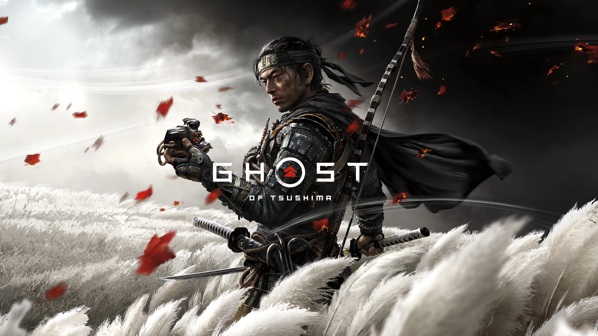
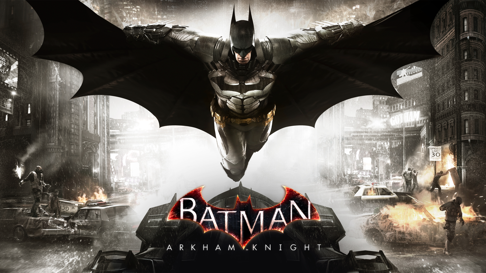

saiti tamashebze
saiti tamashebze
რა არის ვიდეო თამაშები?
ვიდეო თამაშები თანამედროვე ციფრული ხელოვნებისა და გართობის ერთ-ერთი უმნიშვნელოვანესი ფორმაა. ისინი აერთიანებს ვიზუალურ ეფექტებს, მუსიკას, საინტერესო სცენარებს და ინტერაქტიულობას, რაც მოთამაშეს საშუალებას აძლევს თავად გახდეს ისტორიის მთავარი გმირი და არა უბრალოდ მაყურებელი.
პოპულარული თამაშების ჟანრები
Action (ექშენი): თამაშები, სადაც მთავარია სწრაფი რეაქცია, დინამიკური ბრძოლები და თავგადასავლები.
RPG (როლური თამაშები): თამაშები, სადაც ირჩევ პერსონაჟს, ავითარებ მის უნარებს და იკვლევ დიდ, ღია სამყაროს.
Strategy (სტრატეგია): თამაშები, რომლებიც მოითხოვს ლოგიკურ აზროვნებას, რესურსების მართვას და სწორი ტაქტიკის შემუშავებას.
Sports & Racing (სპორტი და რბოლები): თამაშები, რომლებიც რეალურ სპორტულ შეჯიბრებებს და ავტომობილების მართვას იმეორებს.
პირადად თამაშების ჟანრებში story/სიუჟეტური ჟანრები მიზიდავს და ვფიქრობ რომ საუკეთესო ჟანრია
რატომ არის Story თამაშები ასე განსაკუთრებული?
ინტერაქტიული კინო: აქ შენ არ ხარ უბრალოდ ფილმის მაყურებელი — შენ ხარ მთავარი გმირი. შენ იღებ რთულ მორალურ გადაწყვეტილებებს, რომლებიც ხშირად მთელ სიუჟეტს ცვლის.
ღრმა და დაუვიწყარი პერსონაჟები: ისტორიული თამაშების გმირები ისეთები არიან, როგორც რეალური მეგობრები. მათი ტკივილი, სიხარული და ბრძოლა ისე გადმოგეცემა, რომ გავიწყებს, რომ ეს ყველაფერი ეკრანზე ხდება.
დახვეწილი ატმოსფერო და მუსიკა: ბრწყინვალე სცენარი, საოცარი ხმოვანი ეფექტები და ემოციური საუნდტრეკები იმდენად ზუსტად ერწყმის ერთმანეთს, რომ სრულად იძირები გამოგონილ სამყაროში.
რას გვიტოვებს სთორი თამაშები?
კარგმა სთორი თამაშმა შეიძლება შეგცვალოს კიდეც. ის გვაფიქრებს მეგობრობაზე, ღალატზე, სიყვარულსა და მსხვერპლზე. ეს არ არის უბრალოდ დროის მოკვლა — ეს არის ემოციური მოგზაურობა, რომელიც გონებაში სამუდამოდ რჩება.
გეიმინგი შესანიშნავი ჰობია, მაგრამ არსებობს მთავარი რისკი, რომელსაც თითქმის ყველა მოთამაშე აწყდება: დროის კონტროლის დაკარგვა.
თუ სიფრთხილეს არ გამოიჩინებ, თამაშმა შეიძლება ისე ჩაგითრიოს, რომ ვერც კი მიხვდე, როგორ გაფრინდა საათები, დღეები და თუნდაც შენი რეალური ცხოვრებისეული მიზნები.
ფრთხილად იყავი — ადვილად შეიძლება ჰობი დამოკიდებულებაში გადაიზარდოს, რომელიც ძილს, სწავლასა და ჯანმრთელობას გინგრევს!

